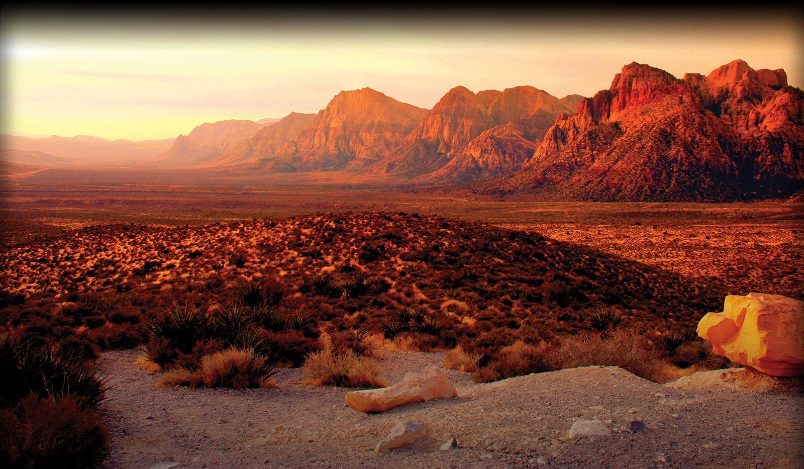
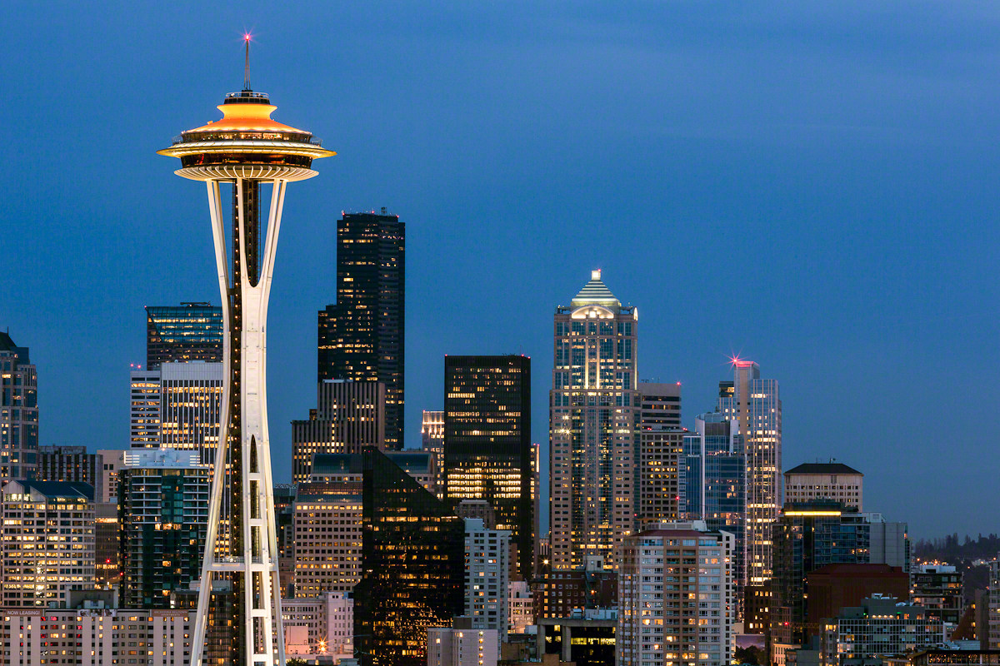
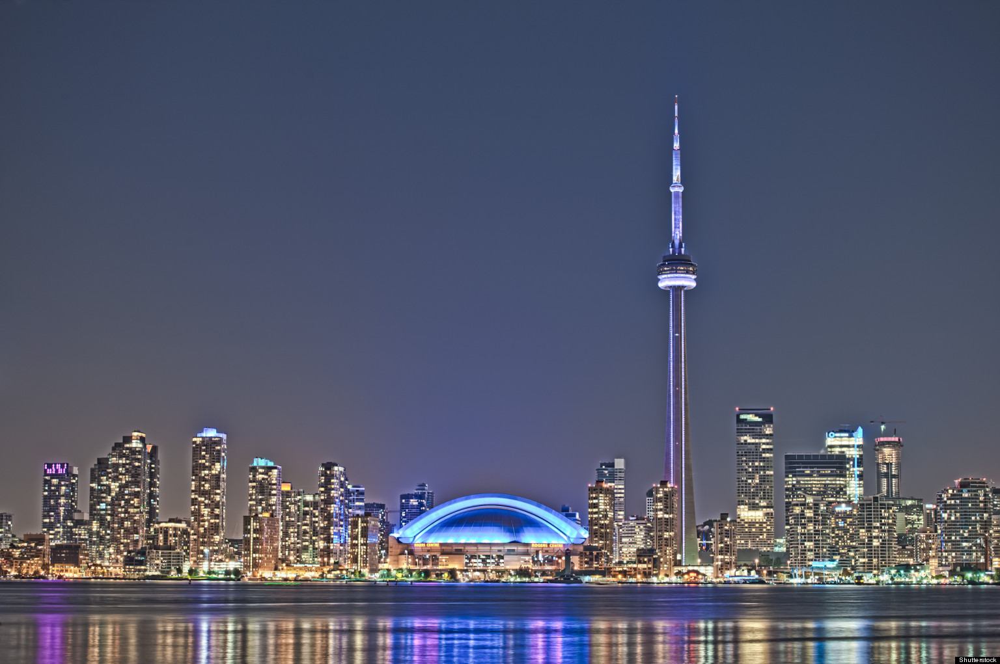

Red Rock Canyon
The conservation area showcases a set of large red rock formations: a set of sandstone peaks and walls called the Keystone Thrust. The walls are up to 3,000 feet (910 m) high, making them a popular hiking and rock climbing destination.

Space Needle
The Space Needle is an observation tower in Seattle, Washington, a landmark of the Pacific Northwest, and an icon of Seattle. Visitors can reach the top of the Space Needle by elevators that travel at 10 miles per hour (4.5 m/s). The trip takes 41 seconds.

CN Tower
The CN Tower is a 553.33 m-high (1,815.4 ft) concrete communications and observation tower in downtown Toronto, Ontario, Canada. Completed in 1976, it is now the 3rd tallest tower in the world and remains the tallest free-standing structure in the Western Hemisphere, a signature icon of Toronto's skyline, and a symbol of Canada.

Times Square
Times Square is a major commercial intersection and neighborhood in Midtown Manhattan, New York City. Brightly adorned with billboards and advertisements, Times Square is sometimes referred to as The Crossroads of the World.Times Square is one of the world's most visited tourist attractions, drawing an estimated fifty million visitors annually.